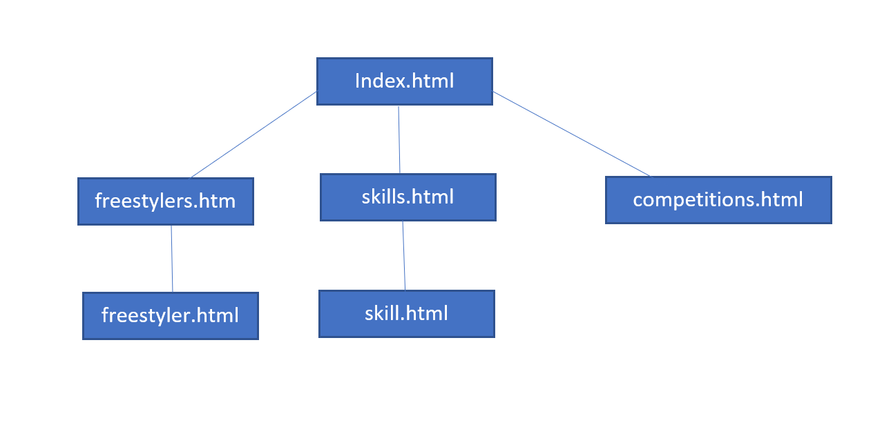
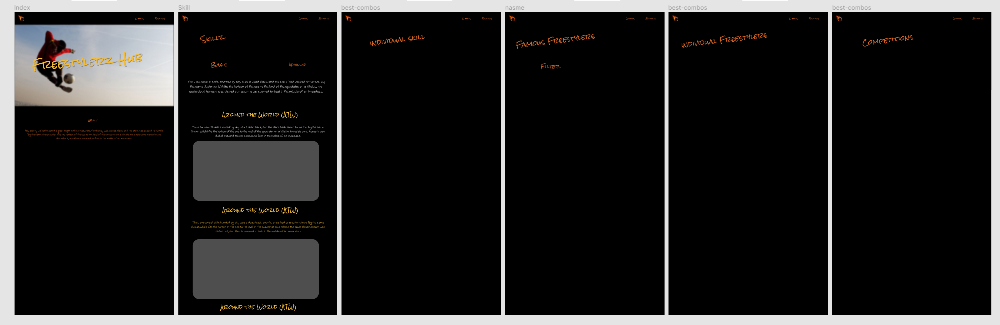

Name: Mohammad Farhan Ahsan
Introduction: What is the essential story being told by your site and what type of structure did you choose to implement.
Freestylerz hub is a website where football freestyle enthusiasts come to discover more about the sport. Users can come here to discover new skills and learn them in the tutorials. They can also explore famous freestylers who have been successful
in the sport. Freestlerz Hub's navigational structure is a Top-down hierarchy where the user starts at the homepage and can choose to navigate to skills or freestylers or competitions. From both the skills and freestylers page, the user can further
click to view a skill and a freestyler respectively in more detail.
State 3 things that have inspired you when creating your website. These could include guest speakers, other websites, artists, developers etc.
- I was particularly inspired by the homepage of Redbull Street Style's official webpage. The banner on the home page caught my attention and the font of the logo seemed like it’s meant for this
type of street sport. Hence, I used a similar font.
- I was also inspired from watching the Redbull Street Style finals. That is also where I got my 'streetstyle' theme.
- For the typewriter effect, it came from the very old pokemon game that happened to stumble upon recently. It typed text out on the instruction box. It was very visually appealing and I decided to use it.
Accessibility
- The website is catered for mobile devices and laptops
- The theme works well both in the presence of bright light and dark surroundings.
State 3 ways in which you have considered usability in your site.
- Since freestyle football is a street sport, I made the website have a street feel to it with my choice of colors and font.
- Visitors of this website will want to learn and discover more about this sport. If they want to learn a new skill, they will easily be able to navigate from the nav bar. If they wish to checkout a pro freestylers, they will be able to do so from
the nav bar.
- Users can search up names of the freestyler they wish to know more about.
State 3 things you had to learn/find out by yourself when creating your site, and describe how you did that (i.e. what searches you did, any new tools/techniques you learned, any changes/adaptations you made to a particular resource to make it work
with your site).
- I had to find out how to get a typewriter effect using javascript. I found it on w3schools. I had to adapt it to my site as I wanted a certain page to have 2 typewriters typing at once. It was in the freestylers page.
- I wasn't satisfied with the nav bar as it looked very plain initially. I wanted to make it more suited to the feel of the website. Hence, I found out how to add borders that looked like it was sketched by pencil.
- I used handlebars.js to template several parts of the site so that my code is not repetitive. I used it in the navbar, index.html, skills.html, skill.html competitions.html, freesylers.html and freestyler.html. This allowed me to communicate much
more info on my website more efficiently and consistently. I also used LessCSS as it had is neater and allows me to use variables in the style sheets. In the root directory, there is a file called "styles.less". I did all my coding in this
file. I converted it to CSS at the very end using https://lesstester.com/. I changed it to css as it works better in coursera's static webpage.
What aspect(s) of your work do you think worked well and why?
I am very happy with the look and feel of the website. I think the website looks good and the animations make it more visually appealing. I managed to communicate the 'theme' of the website with streetlike fonts and bright colors that felt appropriate.
What aspect(s) of your work could be improved, and how might you do things differently another time?
I feel my website could have had more interaction with the user. Right now it is mostly informative and presents information in a visually appealing way. However, I feel that the website could have done more. In future, I will plan on a more 'special
feature' for my website so that it is more purposeful. I also feel that I should have used a mobile first approach. That way, it would have been easier to transition to bigger screen. It is more difficult to shrink everything to fit into a smaller
space than to position smaller things into a large space. Also, I think I could have used Youtube's API instead of embeding in iframe. It would have given me much more control over te videeo players.
What resources were used when creating your work? You should list here any sources of information, libraries, plug-ins or other code that you used to create your site. You should also reference any code you've used by inserting comments at the start
of the scripts.
Images
- 'melody.jpg', image taken from https://www.instagram.com/melofreestyleball/
- 'sean.jpg', image taken from https://www.instagram.com/seanfreestyle/
- 'aguska.jpg', image taken from https://www.instagram.com/aguskafree/
- 'lisa.jpg', image taken from 'http://www.instagram.com/lisa.zimouc
- 'fagerli.jpg', image taken from https://www.instagram.com/fagerlibrothers/
- 'yoana.jpg', image taken from https://www.instagram.com/yoannafreestyle/
- 'andrew.jpg', image taken from https://www.instagram.com/iamandrewhenderson/
- 'indiecowie.jpg', image taken from https://www.instagram.com/indiecowie/
- 'skilltwins.jpg', image taken from https://www.instagram.com/skilltwins/
- 'f2.jpg', image taken from https://www.instagram.com/thef2/
- "redbull.svg", image taken from https://www.redbullstreetstyle.com/
- "superball.svg", image taken from https://www.superball.world/en/
- "WFFA.svg", image taken from https://www.thewffa.org/
libraries
Handlebarsjs.com, 'Handlebars Reference', 2016. [Online]. Available: http://handlebarsjs.com/reference.html. [Accessed: 29- Mar- 2021]
LESSCSS, 'LessCSS Docs', 2020. [Online]. Available: http://handlebarsjs.com/reference.html. [Accessed: 29- Mar- 2021]
Appendix A - Sitemap

Appendix B - Wireframes & Mockups
